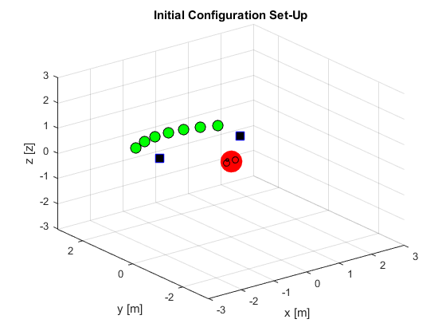

GCONFIG - Generate initial configuration structure
This script generates the main configuration structure used for specifying the system parameters.
The user should select among the different alternatives shown throught the code below.
Once gConfig has been edited, gCheckConfig checks the configuration and extracts important information for the GUI.
See also: SART3D, gCheckConfig
Contents
Add folders to path if SART3D has not been initialized:
SART3Dini; rootfolder = which('SART3Dini'); rootfolder = rootfolder(1:end-12); conf.root = rootfolder; % Clear global vars clearvars -global;
Sound Scene Dimensionality
Specifies the dimensionality of the virtual sound sources. '2D' - Sources positioned in 2D space (X-Y plane) '3D' - Sources positioned in 3D space (X-Y-Z space)
% Note: This will be useful in the future to avoid plotting 'profile view' % elements (saving computational power) conf.sceneDim = '2D';
Reproduction Set-Up Dimensionality
Specifies the dimensionality of the reproduction (loudspeaker) set-up. '2D' - Loudspeakers positioned in 2D space (X-Y plane) '3D' - Loudspeakers positioned in 3D space (X-Y-Z space)
Note: This will be useful in the future to avoid plotting 'profile view' elements (saving computational power)
conf.setupDim = '2D';
List of Current Methods:
- 'VBAP' - Vector Base Amplitude Panning
- 'AAP' - Ambisonics Amplitude Panning
- 'AEP' - Ambisonics Equivalent Panning
- 'HRTF' - Head Related Transfer Function
- 'WFS' - Wave Field Synthesis (Requires SFS Toolbox)
- 'NFCHOA' - Near-Field Compensated Higher Order Ambisonics (Requires SFS Toolbox)
This list specifies the available (implemented) rendering methods to be used in the GUI. When creating a new rendering method, the list should be updated, as well as the call for the method initialization rutine.
methods = dir([conf.root, '\functions\algorithms']); methods = methods(3:end); Nmethods = length(methods); conf.methods.names = cell(Nmethods,1); for ii = 1:Nmethods conf.methods.names{ii} = methods(ii).name; end conf.methods.selected = 'VBAP';
Note: Some methods require a demanding initialization (e.g. HRTF needs to load into memory the HRIR dataset). Although the reproduction method can be changed directly during playback, if a given method has not been previously initialized, some audio dropouts are expected. This can be avoided by selecting the method here or in the GUI pop-up menu before pressing the 'play' button.
Audio Streaming Parameters Used in DSP System Objects
These parameters are used to initialize and configure the DSP System objects used for audio reproduction.
Sampling Frequency:
conf.fs = 44100;
Selected Buffer Size:
The buffer size can be changed in the GUI among the list of values displayed below:
conf.bufferSize.items = {'16'; '32'; '64'; '128'; '256'; ...
'512'; '1024'; '2048'; '4096'; '8192'};
conf.bufferSize.selected = 9;
Samples per frame in Reproduction:
Number of samples used in each processing frame.
conf.SamplesPerFrame = 4096;
Queue Duration (in seconds):
Afects the initial delay when the reproduction is started.
conf.QueueDuration = 0.5;
Processing Parameters
These parameters affect the processing of audio frames during reproduction.
Fade/in/out smoothing:
'on' - When active, consecutive signal frames are smoothly mixed to avoid audio clicks and make source movements smoother.
'off'- This is useful for rendering static scenes with no movements.
conf.fadeBuffers = 'on';
Visualize spherical edit boxes:
Spherical coordinate boxes can be eliminated from the GUI to decrease the graphical complexity.
conf.viewSphEdits = 'on';
Spatial resolution (in meters):
The minimum distance allowed in the source movement before updating the source location. This parameter can be increased to reduce the processing (it only updates the rendering when the source has been moved more than the selected resolution).
conf.sres = 0.1;
Virtual Sources
The following cell arrays define the signals used during playback and the initial location of the virtual sources.
Virtual Source WAV Files:
The WAV files corresponding to the virtual sources of the scene must be specified as follows:
conf.VS.fileNames = {
'test_440.wav',...
'3_Hat.wav',...
'4_Arp.wav',...
'5_Clap.wav',...
'6_Loop.wav',...
'7_Snare.wav',...
'8_FX.wav'};
Virtual Source Locations:
The spatial location of each virtual source is also defined in a cell array using spherical coordinates ([radius, azimuth, elevation]). Angles are specified in degrees (preferably in the range -180 to 180).
conf.VS.coord = {
[2.50, 0, 0],...
[2.50, 10, 0],...
[2.50, 20, 0],...
[2.50, 30, 0],...
[2.50, -30, 0],...
[2.50, -20, 0],...
[2.50, -10, 0]};
Axes limits:
Specify the axes limits from the center of coordinates in meters for allowed source movements
conf.rmax = 4;
Source names in GUI (optional):
By default, the name of the sources is obtained from the defined WAV files. Alternatively, the name of the sources can be directly specified:
% conf.VS.names = { % 'Sine 440',... % 'Hat',... % 'Arp',... % 'Clap',... % 'Loop',... % 'Snare',... % 'FX'};
Alternatively, a simple script containing both things (WAV file names and source locations) can be directly included in the \audioscenes folder.
%test_scene;
You can also let the GUI obtain the name of the virtual sources from the WAVE file names just by letting empty the 'conf.VS.names' cell array.
Loudspeaker Configuration
Loudspeakers in the reproduction setup are defined similarly to virtual sources.
Loudspeaker Locations: Loudspeaker locations are defined in spherical coordinates. For example, for a two-loudspeaker (or headphones) set-up:
conf.LS.coord = {
[1.75, 45, 0],...
[1.75, -45, 0]};
Loudspeaker Channel Mapping:
Each loudspeaker is assigned an output channel from the audio interfaces using by specifying a channel mapping vector. The first element of the vector indicates the audio channel for loudspeaker 1, the second element indicates the audio channel for loudspeaker 2, etc.
conf.driver.ChannelMapping = 1:size(conf.LS.coord,2);
Alternatively, a script containing both cell arrays can be directly loaded from the \setups folder:
%spat_ls_2;
DSP System Audio
The following parameters affect the audio hardware configuration.
Set DSP System device name. The device name can be directly specified here or selected from the GUI's pop-up menu.
%conf.driver.DeviceName = 'ASIO4ALL v2';
Plotting
% Plot contributing loudspeakers when moving a source % (May slow down the performance!) This can be also changed in the GUI. conf.plot.activels = 1;
Check Configuration and Add Additional Info
The function gCheckConfig checks the validity of the configuration and prepares the structure to be used by the GUI.
conf = gCheckConfig(conf);
Save configuration strcuture
Finally, the configuration structure is saved.
save '.\configurations\conf.mat' conf clear all;